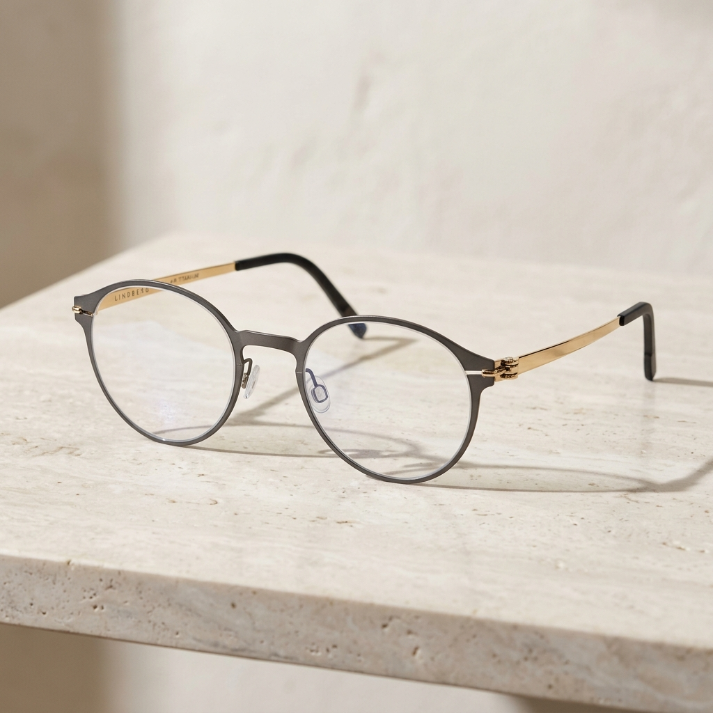
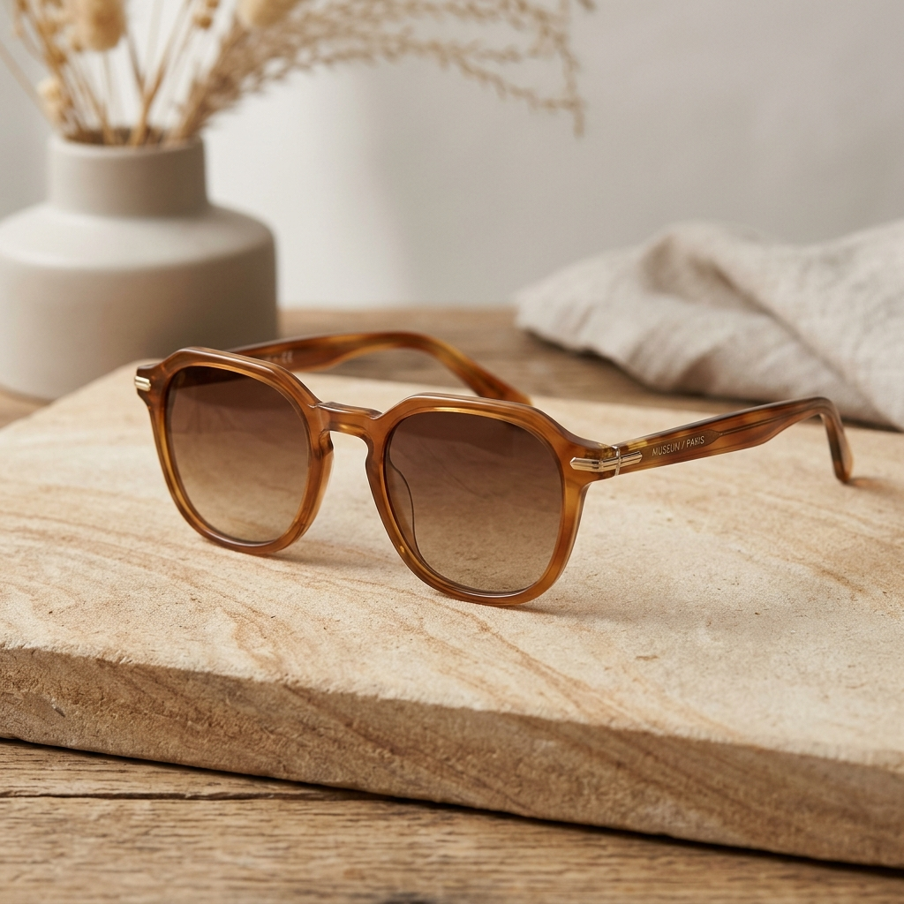
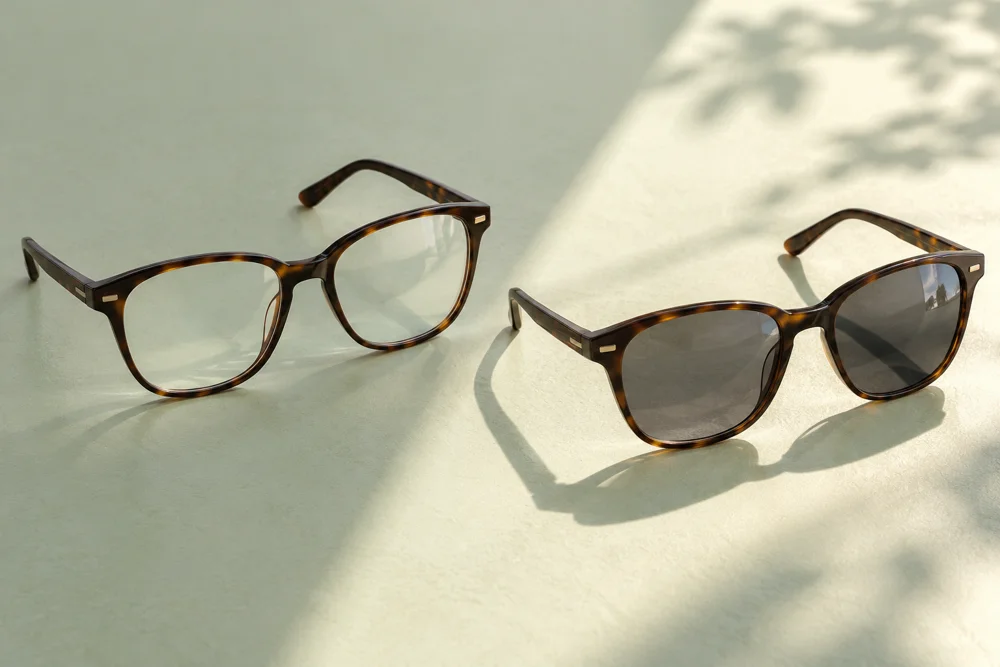
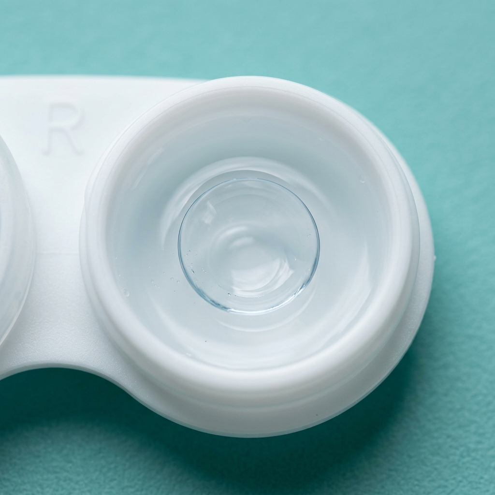

Productos y Tecnologías de Lunas
Ofrecemos una amplia selección de monturas oftálmicas, de sol y lentes de contacto de marcas de prestigio mundial, junto con tratamientos de cristal avanzados.
Nuestra Gama de Productos
Monturas cómodas, ligeras y con diseños que se adaptan a la fisonomía de tu rostro.

Monturas Oftálmicas
Modelos de acetato, metal y titanio con excelente flexibilidad y resistencia. Diseños ideales para soportar lunas de cualquier medida, tanto para adultos como para niños.

Lentes de Sol
Moda y protección ocular en un solo accesorio. Equipados con filtros UV homologados para bloquear la radiación solar dañina. Disponibles también con lunas graduadas y polarizadas.

Lentes Fotocromáticos
Lunas que se oscurecen con la luz del sol y vuelven a aclararse en interiores, adaptándose a los cambios de iluminación para acompañarte en tus actividades diarias.

Lentes de Contacto
Soluciones invisibles para miopía, astigmatismo e hipermetropía. Trabajamos con materiales de hidrogel de silicona de alta oxigenación que cuidan la córnea.
Tratamientos y Tecnologías de Lunas
La luna es el corazón de tus anteojos. Personaliza tus lunas con los tratamientos de protección visual más avanzados del mercado.
Lentes Fotosensibles Inteligentes (Transitions™)
Cristales que reaccionan a la luz UV adaptándose rápidamente al entorno. Son completamente transparentes en interiores y se oscurecen al instante al salir al aire libre. Protegen al 100% de los rayos UVA/UVB y reducen el deslumbramiento.
Blue Protect (Bloqueo de Luz Azul Nociva)
Tratamiento protector que filtra la luz azul-violeta emitida por pantallas digitales (móviles, tablets, ordenadores) e iluminación LED. Ayuda a mitigar el cansancio ocular digital, los ojos secos y previene la alteración de los ciclos del sueño.
Tratamiento Antivaho (Anti-fog)
Tecnología que evita que tus lunas se empañen debido a cambios drásticos de temperatura, el uso de mascarillas, o al realizar actividades deportivas y cocinar. Disfruta de una visión nítida y segura en toda circunstancia.
Soluciones de Enfoque Visual
Monofocales para una distancia de visión, bifocales para cerca y lejos, y multifocales o progresivos para distintas distancias. Te orientamos en la elección según tu receta y tus actividades cotidianas.
¿Tienes una receta y necesitas cotizar tus lentes?
Envíanos una foto de tu receta oftalmológica por WhatsApp. Te cotizaremos las monturas y el tipo de luna ideal según tu medida sin compromiso.
Cotizar por WhatsApp